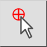
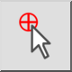
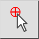
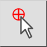

Establecer la posición del cero relativo
Barra de herramienta / icono:
 

Menú: Forzar > Establecer la posición del cero relativo
Acceso directo: R, Z
Comandos: setrelativezero | rz
Esta es una traducción automática.
Barra de herramienta / icono:
 

Menú: Forzar > Establecer la posición del cero relativo
Acceso directo: R, Z
Comandos: setrelativezero | rz
Le permite establecer una nueva ubicación para el punto cero relativo.